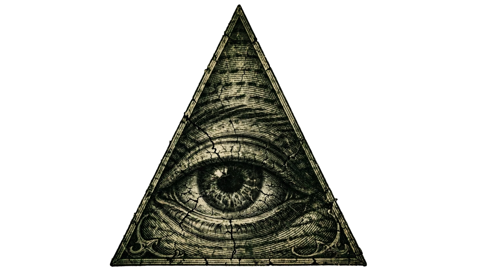

POLÍTICA
Decisiones y poder.
ARCHIVO CLASIFICADO // 1776

La historia detrás de una de las sociedades más misteriosas.
ACCESO AL ARCHIVO AUTORIZADOCAPÍTULO I // EL ORIGEN
Los Illuminati fueron fundados en Baviera, Alemania, por Adam Weishaupt, profesor de derecho.
UN MOVIMIENTO NACIDO EN LA EUROPA DEL SIGLO XVIII.
CAPÍTULO II // LA PROHIBICIÓN
En 1784, las autoridades de Baviera comenzaron a prohibir las sociedades secretas.
En 1785, los Illuminati fueron desarticulados oficialmente.
CAPÍTULO III // EL SÍMBOLO
El Ojo de la Providencia aparece en distintos contextos religiosos, artísticos y políticos. Su uso es anterior a las teorías modernas sobre los Illuminati.
UN SÍMBOLO NO ES, POR SÍ SOLO, UNA PRUEBA.
CAPÍTULO IV // LAS TEORÍAS
Algunas teorías afirman que los Illuminati continúan existiendo y que influyen en distintos ámbitos.
Decisiones y poder.
Dinero e influencia.
Símbolos y mensajes.
Información y opinión.
Estas afirmaciones no cuentan con pruebas concluyentes.
CAPÍTULO V // CULTURA POPULAR
Los ojos, triángulos y otros símbolos aparecen en películas, videojuegos y videoclips.
Esto ha alimentado nuevas teorías y debates sobre posibles mensajes ocultos.
CAPÍTULO VI // INVESTIGACIÓN
Existieron en el siglo XVIII.
Fueron prohibidos en Baviera.
Hay documentos históricos.
Control mundial secreto.
Mensajes ocultos.
Influencia sobre gobiernos.
CAPÍTULO VII // REFLEXIÓN
Aunque la organización histórica desapareció, su nombre continúa presente en la cultura popular.
El misterio, las historias y las preguntas mantienen viva su leyenda.
CAPÍTULO VIII // CONCLUSIÓN
Los Illuminati fueron una sociedad secreta real, pero muchas afirmaciones actuales pertenecen al terreno de la especulación.

ARCHIVO MULTIMEDIA // REPRODUCCIÓN SECUENCIAL
VIDEO 1 // PREPARADO